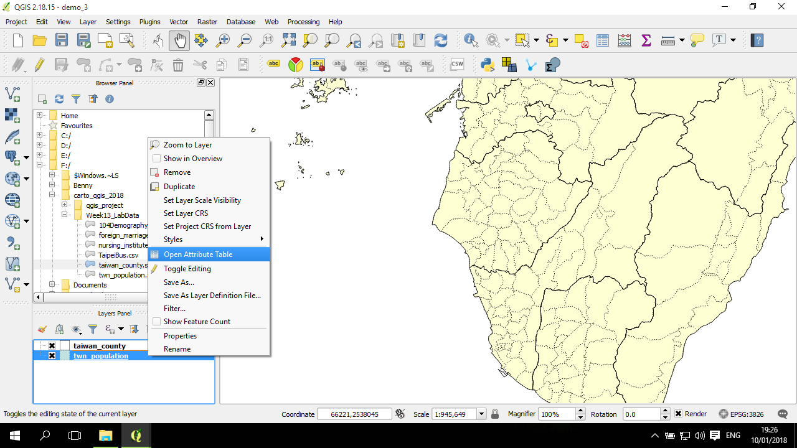

點子圖 (dot)
點子圖是面資料呈現的一種方式，是透過用點的密度，來反映數值的大小。例如，想要繪製鄉鎮的人口數，可以在一個鄉鎮中撒上對應數量的點來反映密度。例如：假設以1個點表示1,000個人，則如果一個鄉鎮有50,000個人，就在鄉鎮中畫上50個點。
因此，在QGIS中，點子圖的繪製需要有三個步驟：
- 設定一個點與實際數值點反映比例 (例如 1:1000) ，並用以計算各個鄉鎮需要畫多少個點；
- 在鄉鎮中撒對應數量的隨機點，並產生這個點圖層；
- 將隨機點圖層繪製出來。
以下將用 twn_population.shp(點擊下載) 進行說明。
計算每一個鄉鎮需要產生的點數量
匯入圖層：
以這個例子來說，是用鄉鎮點人口數資料進行點子圖繪製，並且用縣市邊界進行輔助視覺化。
打開鄉鎮圖層點屬性表：

打開編輯模式，加入新的欄位以計算對應點點數量：
用點與實際數值點反映比例 (例如圖中是 1:50)，計算對應點點數量 (例如圖中是以年輕人口數(young 欄位)來計算對應點點數量)：
依據欄位產生隨機點圖層
依據欄位產生隨機點的方式，是在 Vector-->Research Tools-->Random points inside polygons(varible)：
注意，下拉選單還有另一個類似，但不是以欄位來作設定點數量點選項，要選上面提到的這個。
跳出一個視窗，在 Input Layer 選 twn_population 圖層；sampling strategy 選 Points count；Number field 選前面算好的點數：
Random points 的欄位設設定產生的點圖層的路徑，預設是暫存檔，這裡可以選 Save to file：
繪製點子圖的點
打開點圖層的Properties，來到Style頁面，這是預設點樣態：
預設的點圖層的樣式對於繪製點子圖來說，問題在於點太大。因此需要將點變小(Size 調小，例如設成 0.5)；另一方面，當點設定成很小，但若點點邊緣寬度相對粗，則會讓點看起來都是這邊緣的顏色，因此可以將這邊緣取消掉(將Outline style從原來的Solid Line 改成 No Pen)：
桃園與附近地區的局部放大圖：
從上述的結果來看，這個點的反映比例似乎太小，導致點太多。下一個章節將試著將比例作調整，再繪製出圖。
再重新繪製一遍
在局部觀察時似乎還不錯，不過如果在全台灣的範圍下觀察，點太多。 所以需要再進一步作調整。
這回計算將沿用上面產生的欄位，計算點比例是 1個點代表 1000人 (1:1000):